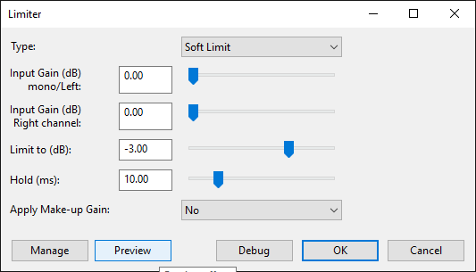

Limiter
From Audacity Development Manual
This limiter effect provides two basic types of effect; "limiting" and "clipping". The "limiting" effect is a special kind of dynamic compression that responds very rapidly to peaks in the waveform. The "clipping" effect is a kind of distortion that changes the shape of the waves by "clipping" off the high and low peaks.
- Accessed by:
- 
Type
Soft Limit (default) progressively reduces the gain as the amplitude of the waveform approaches the "Limit to (dB)" threshold and prevents the waveform from exceeding that level.
Hard Limit makes no change to the audio until the peaks reach the "Limit to (dB)" threshold. Where the input level (after applying optional input gain) exceeds the threshold, an equal amount of negative gain is applied so that the peaks never exceed the threshold.
Hard Clipping is the simplest method for reducing peaks. It just chops off the peaks at the "Limit to" threshold. Note that clipping causes distortion. Hard clipping may be useful for purposefully introducing distortion on high peaks, for example to add high harmonics to percussive sounds. Excessive use of hard clipping creates a harsh distortion that is usually unpleasant. For heavier use of distortion the "Soft Clipping" option may be preferable. Hard clipping may also be useful for producing synthetic signals for scientific purposes.
Soft Clipping works in much the same way as "Hard Clipping", but is less fierce in that it "squashes" the peaks rather than cutting them off flat. Soft clipping starts to reduce the peaks a little below the threshold level and progressively increases its effect as the input level increases such that the threshold is never exceeded. When applied heavily, the effect is similar to a "Fuzz Box" effect.
Input Gain
Amplifies the audio before applying the limiter.
As the limiter acts on audio peaks that exceed the Limit to (dB) threshold, it will clearly have little or no effect on audio tracks in which all of the audio is below the threshold level. In such cases, the audio should be amplified before limiting so that the limiter can work properly. Amplification could be applied using Audacity's Amplify effect, or more conveniently using the "Input Gain" controls.
For mono tracks, only the "mono/Left" gain control has any affect. For stereo tracks the left and right channel gains may be adjusted independently of each other.
Limit to (dB)
Limits the amplitude (after optional amplifying) to this level.
Whichever type is selected, the limiter prevents the waveform from exceeding this level. (Note that makeup gain, if used, is applied to the waveform after it has been limited.)
Hold
In order to catch even the most sudden peak, the limiter "looks ahead" to see when the next peak is coming, and begins to reduce the gain just a little in advance of the peak. The gain level is then held at the reduced level for a short while before being released back to the normal level. Looking ahead and holding the gain level allows the gain to adjust more smoothly and reduces the amount of distortion. The shorter the "Hold" duration, the faster the limiter responds to changes in input level. It is generally desirable for the limiter to respond very rapidly, but responding too rapidly will produce distortion, especial when processing low frequency sounds such as a double bass.
Normally this control can be left at the default (10 ms) setting.
Apply makeup gain
Amplifies the output (post limiter) close to 0 dB (usually just a little below 0 dB). This is useful when using the limiter to maximize loudness.
The buttons
Clicking on the command buttons give the following results:
- gives a dropdown menu enabling you to manage presets for the tool and to see some detail about the tool. For details see Manage presets.
- plays a short preview of what the audio would sound like if the effect is applied with the current settings, without making actual changes to the audio. The length of preview is determined by your setting in , the default setting is 6 seconds.
- applies the effect to the selected audio with the current effect settings, but unlike the effect runs in debug mode. This is primarily of use when writing or editing Nyquist plug-ins.
- In addition to the normal plug-in behavior, a "debug window" opens to display error messages, normally the debug window will be empty.
- applies the effect to the selected audio with the current effect settings.
- aborts the effect and leaves the audio unchanged.
If there is a very low note, say below 100 Hz, then the time from one peak to the next may be longer than the "hold" time. Thus the gain will start to reduce as the peak level rises, then will start to "release" (return to normal gain) between one peak and the next. This rapid "fluttering" of the gain level distorts the waveform, which is usually undesirable. The solution to the problem is simple - just hold the gain at the reduced level for a little while so that the limiter is responding to the overall shape of the note and not the individual waveform peaks.